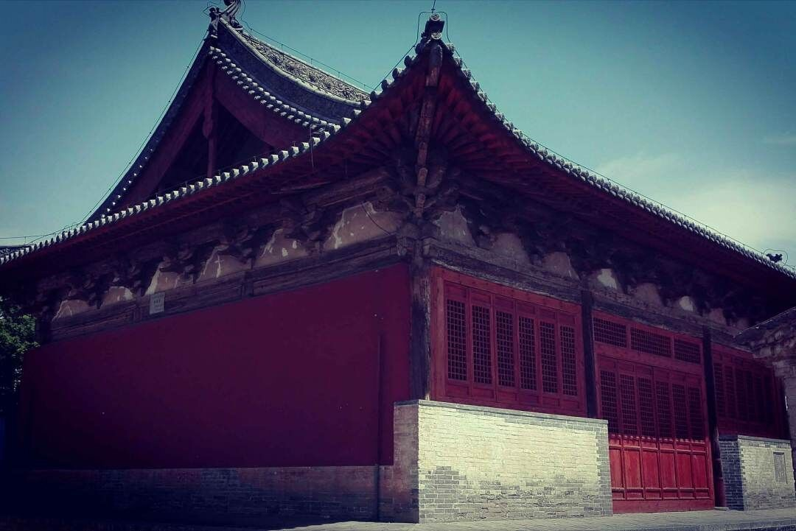
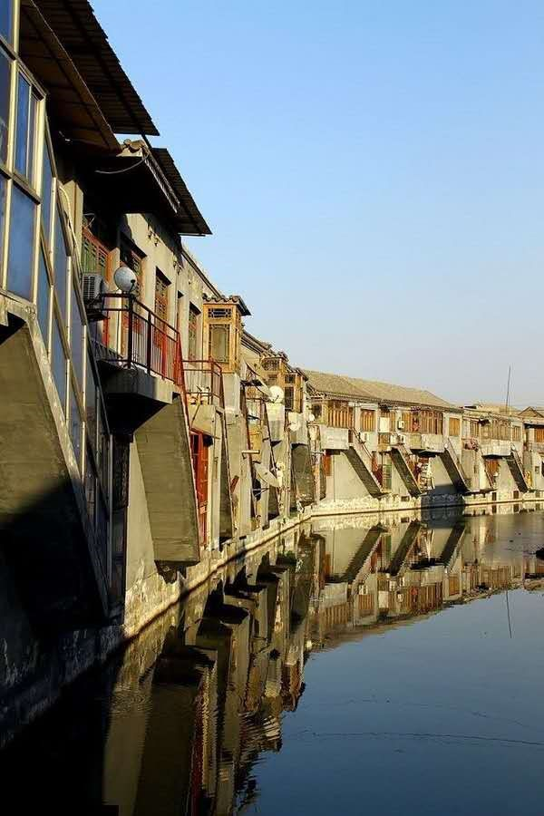
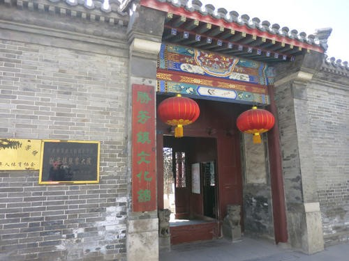

2020年第四届“华夏文化，有冀可寻”河北地域特色文化上的展览|古城文化上
那斑驳的墙面上，跟随着岁月的变化在上面留下了一年又一年的印记，还有那一排排的房屋整整齐齐的紧挨着彼此，那檐角向上微微翘起，看似一个大大的微笑。经过岁月的冲刷，那红砖青瓦也因此掉色而显得格外沧桑。当你褪去脚上的鞋子，踏走在那平静的石板路上，感受一下古镇带给你的另一番感觉，它犹如江南女子般温柔，想想也是一件很惬意的事情呢。都说古镇总会有些神秘之处让你的好奇心倍增，很想让你带着疑问一探究竟，那么这河北的古镇算是给了我们最好的答案，这些古镇这一生一定要去看一看。接下来让我们走进千古名城，探寻魅力河北。
（选自十人九城）
（选自邯郸古城）
（选自勿忘国耻）
一、张家口蔚县古城文化
（一）暖泉古镇
名字的由来很是特别，因有一年四季水温如一的泉水而名"暖泉"。在明朝时期的时候，这里的古镇发展成了这些“三堡、六巷、十八庄”，在这个时候也无疑是小镇在历史上最为辉煌的时刻。
位于张家口蔚县西部
主要景点：
1.暖泉书院
又称王敏书院。这座匠心独具的书院，是元代工部尚书建筑师、能工巧匠王敏的家塾。暖泉书院是暖泉古老文化的标志和象征，是体现暖泉水乡风韵、园林特色的主要景点。该书院在蔚州四大书院中建筑年代最早。
2.西古堡
全国重点文物保护单位，为构成暖泉古镇的“三堡”之一，位于暖泉古镇西南部。
西古堡为明清古建筑群，内部集古民居、古寺庙、古城堡、古戏楼于一体，最重要的是堡内仍然有居民生活，保持着传统民俗，具有极高的游览价值和研究价值。

3.华严寺
全国重点文物保护单位，建于明洪武三十二年（1399年），清初顺治年间改称崇教寺，俗称下华严。现占地3400平方米，自南向北有前、后殿，两侧有东、西配殿。前殿面阔进深各三间，单檐歇山布瓦顶，檐下施五踩斗拱，梁架为五架梁，前、后各出单步梁，内施天花，绘有精美的龙凤图案。

4.玻璃塔
中国古镇第一玻璃塔，全塔廊檐及平台均为玻璃建造，在阳光折射中不同方向的玻璃呈现出不同的色彩。
5.老君观
道观座北朝南，主要建筑:戏楼、山门、前殿(三清殿)、后殿(被北极玄宫)以及东西配殿分布南北一条中轴线上。老君观山门为五架梁，悬山式。山门内有一木引壁，上画太极八卦乾坤图，山门东西各蹲一只石狮。
（选自Dream Girls）
二、霸州胜芳古城文化
（一）胜芳古镇
胜芳镇位于霸州市境东南部，东殿溢流洼，中亭河北岸、距北京120千米，东邻天津35千米，西距京九铁路霸州站26.3千米。有胜芳高铁站一座津兴高铁和津保高铁交汇处。2018年5月24日，胜芳镇入选最美特色小城镇50强。2019年10月，胜芳镇入选“2019年度全国综合实力千强。
胜芳古镇“龙脉”传说
混沌初开，九州大地洪水泛滥，一片汪洋，虽有女娲补天，捏泥造人，因天灾人祸，民不聊生。圣王大舜派鲧去治理洪水，他采用“堵塞”之法，水患仍在蔓延，因治水不利被杀于山东羽山。后又派鲧的儿子禹去治水，他冥思苦想，采取“疏导”的方法，逢山开水道，平原挖泻渠，把江河之水疏导入海，彻底解决了部分地区的水患。大禹治水利千秋，被四方部落共同推举为首领，人称“禹，大圣也”。大禹麾下有一条小青龙，在治理水患中立下了汗马功劳，禹把西山之麓的大水潭封赐给他，作为潜心修行的洞天福地，名称“青龙潭”。
禹王仙逝，小青龙时常惦念人间疾苦，经常出巡，拯救一方百姓。他驾起祥云来到“府河”（古河名）以下，大清河中段，看到这里地势低洼，大雨倾盆，大淀决口，沟满濠平，百姓生活在水深火热之中。小青龙聚将招兵，继续着禹王的事业，往东疏通入海之河———中亭河。往西治理上游水系，洪水被驯服，大地恢复了原貌。勤劳质朴的堤头村人民在家乡的土地上精心耕耘，时近“三伏”，打白菜种荞麦，秋后有了一季儿收成。百姓们糠糠菜菜，节衣缩食，熬过了艰难漫长的冬春。转年天公作美，风调雨顺，田野里小麦随风荡漾、玉米长势喜人。棉桃挂满枝杈，东淀中芦苇映碧水，荷花争芳斗艳，红菱随风漂浮，水鸟空中翱翔，百姓们喜笑颜开，对秋天寄予了很大希望，堤头村的村民知恩必报，称小青龙是赐福的“大恩人”，秋后，建造了一座庄严肃穆的“龙王庙”，香火鼎盛。
这年，小青龙从东海祝寿归来，路过堤头村，只见这里男耕女织，民风纯正，龙王庙里香火缭绕，梵音绵绵，到处稻禾飘香，绿柳夹岸，荷莲满淀，鱼肥蟹美，不是江南胜似江南。小青龙决定久居这风水宝地，既能享受人间香火，又可福荫这方黎民，他降下云头，俯卧大地，演化为“龙脉”——古村落的“村中河”。一条腾飞的巨龙，给这里的百姓带来了平安吉祥。龙头位于村西的碑碣子（地名）与大淀相通，吸纳着淀中圣水；前左爪伸向村西南与二瓜河（古河名）相通；前右爪伸向村西北的西大坑（地名），连接中亭河；后左爪经臭水坑（地名）伸向村南的对子坑（地名）；后右爪伸向村北的北大坑（地名）；龙尾巴位于村东的三道河嘴，于中亭河相通，地名叫“大龙尾”。这段“村中河”长约八华里。村民在龙背上建房兴村，生息繁衍。光阴似箭，日月如梭，“堤头村”古村落，遂改名为“武平”、“渭城”、“胜芳”，青龙伴着古镇度过了两千五百多个春秋。

（选自三只臭皮匠）
（二）胜芳古建
1、 胜芳古建----牌坊
胜芳“三宗宝”之一的牌坊，大约建于十七世纪明末清初年间，坐落在关帝庙门前，是一座独具特色的四柱习檐木结构建筑。每根柱子下部都有四块抱柱石，以两道铁箍将柱子包起来，抱柱石镶在石基之中，并无戗柱支撑。这正是它的独到之处：这个牌坊高六米，上方柱芯有一块匾额，北面为“人伦之至”，南面为“护国庇民”。
2 、胜芳古建----戏楼
胜芳戏楼，即“九成楼”，约建于清乾隆年间。戏楼座南朝北，清制大式建筑结构，歇山大屋顶，屋顶四角有跑兽，左右前檐习翅为翼，东西檐上刻有十尊栩栩如生的鸟兽造型，两边檐角各悬一铜铃，正面两根明柱支撑，檐板绘以花纹图案，画工精细。戏台高二米，周围镶以汉白玉条石，中间以木制屏风分割前后台。木屏两侧设“出将”、“入相”二门。戏楼正中悬以竖匾，上书“九成楼”楷体大字。
3、 胜芳古建----文昌阁
文昌阁位于霸州市胜芳镇东南，建于明正德十四年（1615年）
文昌阁为四方形，高三层，三丈三尺，暗喻三十三层天。阁上高悬匾额两块，竖额“魁星楼”，横匾“文昌阁”。下有基台，上有顶尖，阁的底层四周砖墙，楼梯分布于大厅两侧，供游人攀登。中层三面砖墙，西北面为前敞式木结构。神龛中供奉着安坐的“文昌”塑像，又名“文曲星”，另有白马与马童的雕塑。四壁刻画着佛教的神仙，形态奇巧，各有千秋。第三层为全木架结构，由三十二根立柱支撑阁顶，只有“魁星”雕塑。魁星楼内有一匾额，上书“天下闻名”四个大字。
4、 胜芳古建----张家大院
张家大院是清代的民居建筑。位于河北省胜芳镇中山街南侧，占地面积1648平方米，建筑面积1015平方米，建于清道光十年（1830年），原房主为胜芳八大家之一的聚兴堂张家。
张家大院共分为四个四合院，西侧两院为清式木构架硬山建筑；东侧两院为欧式建筑，中间有穿堂鸳鸯厅，为一厅四室。四个小院均有小门，回廊连通。这所大宅院基本保持原貌，从中足可领略传统民居建筑的精妙。包含着美学、民俗学、建筑学、历史学等种种文化内涵。现为河北省级文物保护单位.

5、 胜芳古建----王家大院
王家大院，雅号“师竹堂”，坐落于胜芳中山街北，南面胜阳路（原武庙前街），始建于清光绪六年（1880年）。整体建筑汇集了西方的拜占庭、中国的歇山坡顶以及非洲的建筑风格，中西合璧、交映生辉，古朴中透着些许明快。
宅院原分四个小院，东北角小院为欧洲式建筑；东南角小院为非洲建筑风格；西北角小院为中国传统清式建筑；西南角小院为进大门前院，欧式门窗，四面回廊，三道门风格各异，其中大门为大虎座门楼，门楼上额砖雕，刻工精细，共三方，中间一方为北京白塔寺，左侧一方为上海百老汇，右边一方为天津墙子河。现为霸州市级文物保护单位。
6、胜芳古建----大悲寺
胜芳大悲禅寺，位于河北霸州市胜芳镇，于2008年整体重建，为霸州市十三大文化精品建筑之一，也是环京津地区欲推出的重要景观之一。 绵延2500余年的胜芳，自古以来就是众教兴盛之地。历史上曾有"三寺两庵十八庙"之说，据坊间流传，繁盛之时、弹丸之地的胜芳曾建有各类庙宇72座，当年信众之广可见一斑。
作为胜芳三大寺之一的胜芳大悲禅寺，旧称北大寺，始建于元朝末年，复建于明天顺元年，重修于正德五年，迁延六百余年，清朝达到鼎盛，后因天灾兵燹，随之毁劫。2008年胜芳古镇修缮中大悲禅寺得以整体复建，规划占地8万平方米，总投资2亿元，其中建筑面积2.8万平方米，拥有大小殿堂楼宇23座。这些建筑错落有致，气宇轩昂，或青砖岱瓦，或雕梁画柱。重重殿宇金碧辉煌、交相辉映，檐内风铃叮当奏响，梵呗禅唱相互应和，与周围景观融为一体。避雨式回字型廊廓、千年古树、奇花异草和游桥让人行走其中，瞬间有超凡脱俗之感，给人回味和遐想。
7、 胜芳古建----中苏友好文化宫
胜芳博物馆位于胜芳古镇中山大街，原为中苏友好文化宫，1958年为纪念中苏友好建造。博物馆西为王家大院，东临胜芳河通济桥，是集中展示胜芳昔日风采的地方。水乡古镇风韵尽收其中，水陆相依的民居村落、织席打渔的劳动场景、古老的商业文化、胜芳花会的实物遗存，芦花飘香、鱼香蟹肥的水乡场景再现了明清时期冀中的“清明上河图”。
8 、胜芳古建----东桥
东桥是胜芳古镇六大名桥之一，坐落在古镇之东，是胜芳古镇居民通往外界最重要的通道，自历史以来，东桥在胜芳人心里，承载的不仅仅是一座普通桥梁所能承载的重量，她是胜芳人心里的母亲桥，胜芳人记忆里最重要的标志性设施。
（选自胜水河乡，万古留香）
三、 怀来古城文化
（一）鸡鸣古城
鸡鸣驿在怀来县偏西北洋河北岸的鸡鸣山下，有一座故城叫鸡鸣驿。这座历史上留下来的方城重镇，在中国古代邮驿史上曾是个大型驿站东西各开一城门，建有城楼，城外有烟墩。城内的五条道路纵横交错，将城区分成大小不等的十二个区域。城内建筑分布有序，驿署区在城中心，西北区有马号，东北区为驿仓，城南的傍城有驿道东西向通过。城内还有古代遗留的商店和民居。
鸡鸣“荷盒二仙”的故事
在我国传统的神话故事中，神仙原本都是凡人，因为一些事情修成正果，“荷盒二仙”也不例外，二人是怀来县当地人，是一对兄弟，吃苦耐劳、心地善良，哥哥呢？养荷花卖藕为生，弟弟呢？是个有名的木匠，帮人们打造首饰盒，因为头脑灵活，为人诚信，所以生意越做越大，年纪轻轻就成了当地的有钱人，但是时常救济乡亲，为家乡做一些善事。
据说有一年，一场突如其来的冰雹将还未成熟的稻谷全部打倒在地上，看着马上就要收割的粮食变成了这样，当地的百姓痛不欲生。兄弟俩知晓后商量了一下，决定用高价去收购这些稻谷，帮乡亲们渡过难关。乡亲们自然是感恩戴德，可是收来的稻谷无法食用，虽说是为了乡亲们，但都是真金白银买来的，舍不得扔掉，只好堆放在那里，看看能否用作他用。也许是好心有好报，冰雹的事情没过多久，当地的马匹又爆发了瘟疫，短短几天，方圆几十里的马匹几乎无一幸免，眼看无法医治的时候，一位老兽医记起一个偏方：堆黄的青稻谷可解此疫。这时节可去哪找？突然有养马人想起前不久兄弟俩高价收购了不少的青稻谷，只是不知还有没有。有没有去了先看看，于是大批的养马人奔向兄弟二人家中求助，去了说明来意，二人毫不犹疑，如能救马，分文不取，将那些堆黄的青稻谷全部送予众人。
还有一年，兄弟二人收购的大量木材突然着火，虽然人缘非常好，很多人帮忙救火，可是火势太大，眼看就控制不住，说来也怪，天气开始下雨，一下就是一天，烧了一半的木材变成了木炭，恰好赶上当年的冬天非常冷，很多人来求购木炭，好心的兄弟俩以半价出售，结果一算账，不但没亏，还挣了少许。多年的善举让财神爷感动了，神仙显灵，赠予哥哥玉莲藕，弟弟聚宝盒。
又过了很多年，兄弟二人去世，乡亲们非常感激和怀念，就在民间将他们当成神仙来供奉，合称“荷盒二仙”，后人也称之为“和合二仙”。
（选自三只臭皮匠）